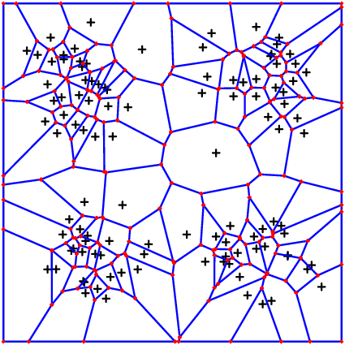
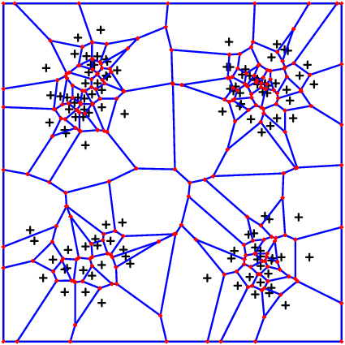

Voronoi: Nodes and Geometry, Integrators
Nodes
The most basic thing is the creation of a list of Points. We advise to use the following:
HighVoronoi.VoronoiNodes — MethodVoronoiNodes(x::Matrix)also available in the forms
VoronoiNodes(x::Vector{<:Vector})
VoronoiNodes(x::Vector{<:SVector})creates a list of points (as static vectors) from a matrix.
Example: 100 Points in $(0,1)^3$
data = rand(3,100)
points = VoronoiNodes(data)An advanced method is given by the following
VoronoiNodes(number_of_nodes::Int;density ,
domain::Boundary=Boundary(), bounding_box::Boundary=Boundary(),
criterium=x->true)When density = x->f(x) this will create a cloud of approximately number_of_nodes points inside the intersection of domain and bounding_box with spatial distribution $f(x)$. Note that both exact number and position of points are random. The variable bounding_box allows to handle also the case when domain is unbounded. The intersection of domain and bounding_box HAS TO BE bounded!
The following two pictures show first a distribution density = x->sin(pi*2*x[1])^2*sin(pi*2*x[2])^2 and the second takes the same density squared.


Single Nodes
To instatiate a single node (e.g. if you want to add a specific node to an existing list of nodes) use
# make [1.0, 0.0, 0.5] a valid Voronoi node
VoronoiNode([1.0, 0.0, 0.5])Example
# This is an example to illustrate VoronoiNodes(number_of_nodes::Int;density)
## First some plot routine ############################
using Plots
function plot_2d_surface(nodes, values)
# The following two lines are necessary in order for the plot to look nicely
func = StepFunction(nodes,values)
new_nodes = vcat([VoronoiNode([k/10,j*1.0]) for k in 0:10, j in 0:1], [VoronoiNode([j*1.0,k/10]) for k in 1:9, j in 0:1])
append!(nodes,new_nodes)
append!(values,[func(n) for n in new_nodes])
x = [node[1] for node in nodes]
y = [node[2] for node in nodes]
p = Plots.surface(x, y, values, legend=false)
xlabel!("X")
ylabel!("Y")
zlabel!("Values")
title!("2D Surface Graph")
display(p)
end
########################################################
## Now for the main part ################################
my_distribution = x->(sin(x[1]*π)*sin(x[2]*π))^4
my_nodes = VoronoiNodes(100,density = my_distribution, domain=cuboid(2,periodic=[]))
# you may compare the output to the following:
# my_nodes = VoronoiNodes(100,density = x->1.0, domain=cuboid(2,periodic=[]))
println("This generated $(length(my_nodes)) nodes.")
my_vals = map(x->sin(x[1]*π)^2*sin(x[2]*π),my_nodes)
plot_2d_surface(my_nodes,my_vals)DensityRange
HighVoronoi.DensityRange — TypeDensityRange{S}provides a rectangular grid of points in a S-dimensional space. It is initialized as follows:
DensityRange(mr::AbstractVector{<:Integer},range)Here, range can be of the following types:
AbstractVector{Tuple{<:Real,<:Real}}: It is assumed that each entry ofrangeis a tuple(a_i,b_i)
so the range is defined in the cuboid (a_1,b_1) imes... imes(a_{dim},b_{dim})
mr is assumed to have the same dimension as range and the interval (a_i,b_i) will be devided into mr[i] intervalls
AbstractVector{<:Real}: if e.g.range=[1.0,1.0]this will be transferred torange=[(0.0,1.0),(0.0,1.0)]
and the first instance of the method is called
Float64:rangewill be setrange*ones(Float64,length(mr))and the second instance is calledTuple{<:Real,<:Real}: range will be set to an array of identical tuple entries and the first version is called
Alternatively, one may call the following method:
DensityRange(mr::Int,range,dimension=length(range))it is assumed that range is an array or tuple of correct length and mr is replaced by mr*ones(Int64,dimension). If range is not an array, then dimension has to be provided the correct value.
Geometry
The creation and storage of Voronoi geometry data is handled by the following class.
HighVoronoi.VoronoiGeometry — TypeVoronoiGeometry{T}This is the fundamental struct to store information about the generated Voronoi grid. The geometric data can be accessed using the type VoronoiData. However, there is always the possibility to access the data also via the following fields:
- Integrator.Integral: stores the integrated values in terms of a
Voronoi_Integral - basic_mesh: stores the fundamental data of nodes and verteces. also stored in Integrator.Integral.MESH
- nodes: direct reference to the nodes. Also provided in basic_mesh.nodes
Accessing the data directly, that is without calling VoronoiData, is likely to cause confusion or to provide "wrong" information. The reason is that particularly for periodic boundary conditions, the mesh is enriched by a periodization of the boundary nodes. These nodes are lateron dropped by the VoronoiData-Algorithm.
To create a Voronoi mesh it is most convenient to call either of the following methods
HighVoronoi.VoronoiGeometry — MethodVoronoiGeometry(xs::Points,b::Boundary)This creates a Voronoi mesh from the points xs given e.g. as an array of SVector and a boundary b that might be constructed using the commands in the Boundaries section.
You have the following optional commands:
silence: Suppresses output to the command line whentrue. The latter will speed up the algorithm by a few percent. default isfalse.integrator: can be either one of the following values:VI_GEOMETRY: Only the basic properties of the mesh are provided: the verteces implying a List of neighbors of each nodeVI_MONTECARLO: Volumes, interface areas and integrals are calculated using a montecarlo algorithm. This particular integrator comes up with the following additional paramters:mc_accurate=(int1,int2,int3): Montecarlo integration takes place inint1directions, overint2volumetric samples (vor volume integrals only). It reuses the same set of directionsint3-times to save memory allocation time. Standard setting is:(1000,100,20).
VI_POLYGON: We use the polygon structure of the mesh to calculate the exact values of interface area and volume. The integral over functions is calculated using the values at the center, the verteces and linear interpolation between.VI_HEURISTIC: When this integrator is chosen, you need to provide a fully computed Geometry including volumes and interface areas.VI_HEURISTICwill then use this information to derive the integral values.VI_HEURISTIC_MC: This combines directlyVI_MONTECARLOcalculations of volumes and interfaces and calculates integral values of functions based on those volumes and areas. In particular, it also relies onmc_accurate!
integrand: This is a functionf(x)depending on one spatial variablexreturning aVector{Float64}. The integrated values will be provided for each cell and for each pair of neighbors, i.e. for each interfaceperiodic_grid: This will initiate a special internal routine to fastly create a periodic grid. Look up the section in the documentation.
With density distribution:
VoronoiGeometry(number::Int,b=Boundary();density, kwargs...)this call genertates a distribution of approsximately number nodes and generates a VoronoiGeometry. It takes as parameters all of the above mentioned keywords (though periodic_grid makes no sense) and all keywords valid for a call of VoronoiNodes(number;domain=b,density=density, ....)
In future versions, there will be an implementation of the parameter cubic=true, where the grid will be generated based on a distribution of "cubic" cells. In the current version there will be a warning that this is not yet implemented.
Advanced methods
VoronoiGeometry(file::String)
VoronoiGeometry(VG::VoronoiGeometry)Loads a Voronoi mesh from the file or copies it from the original data VG. If integrator is not provided, it will use the original integrator stored to the file. In the second case, if integrand is not provided explicitly, it will use integrand = VG.integrand as standard. Additionally it has the following options:
_myopen=jldopen: the method to use to open the file. See the section onwrite_jld.vertex_storage: Defines the way data is stored internally. standard is the most recent and most efficient methodDatabaseVertexStorage(). Other options are theReferencedVertexStorage()which is slower but may be useful in low dimensions and theClassicVertexStorage()which is fast for integration algorithms in low dimensions and which was the first database structure underlying the computations. This parameter can of course only be set upon the very first creation of the geometry and cannot be modified afterwards.search_settings: aNamedTuplemostly to provide(method = ... ,threading = ...)wheremethodchooses the Raycast method andthreadingprovides information on the multithreadingoffset: See the section onwrite_jld.integrate=false: This will or will not call the integration method after loading/copying the data. Makes sense for usingVI_HEURISTICtogether withvolume=true,area=trueand providing values forintegrandandintegrand. Ifintegrand != nothingbutbulk==falseorinterface==falsethis parameter will internally be settrue.volume=true: Load volume data from filearea=true: Load interface area data from filebulk=false: Load integrated function values on the cell volumes from file. When settrueandintegrand=fis provided the method will compare the dimension offand of the stored data.interface=false: Load integrated function values on the interfaces. When settrueandintegrand=fis provided the method will compare the dimension offand of the stored data.
Integrators (overview)
As discussed above there is a variety of integrators available to the user, plus some internal integrators that we will not discuss in this manual. The important integrators for the user are:
VI_GEOMETRY: Only the basic properties of the mesh are provided: the verteces and an implicit list of neighbors of each node. This is the fastes way to generate aVoronoiGeometryVI_MONTECARLO: Volumes, interface areas and integrals are calculated using a montecarlo algorithm introduced by A. Sikorski inVoronoiGraph.jland discussed in a forthcoming article by Heida, Sikorski, Weber. This particular integrator comes up with the following additional paramters:mc_accurate=(int1,int2,int3): Montecarlo integration takes place inint1directions, overint2volumetric samples (vor volume integrals only). It reuses the same set of directionsint3-times to save memory allocation time. Standard setting is:(1000,100,20).
VI_POLYGON: We use the polygon structure of the mesh to calculate the exact values of interface area and volume. The integral over functions is calculated using the values at the center, the verteces and linear interpolation between. Also this method is to be discussed in the anounced article by Heida, Sikorski, Weber.VI_FAST_POLYGON: Even more precise thanVI_POLYGON, very fast (50 secs for 500 nodes in 6D) but using a lot of memory. It is advised to use this integrator if you insists on accuracy over performance and if you have large RAM (advised >=4GB of FREE RAM). On my personal machine with total 16GB RAMVI_FAST_POLYGONis by factor 15 faster thanVI_POLYGONfor 500 nodes in 6 dimensions and integrating $x\rightarrow(x_1,x_2^2)$.VI_HEURISTIC: When this integrator is chosen, you need to provide a fully computed Geometry including volumes and interface areas.VI_HEURISTICwill then use this information to derive the integral values.VI_HEURISTIC_MC: This combines directlyVI_MONTECARLOcalculations of volumes and interfaces and calculates integral values of functions based on those volumes and areas. In particular, it also relies onmc_accurate!
It is important to have in mind that the polygon-integrator will be faster in low dimensions, whereas the Montecarlo integrator will outperform from 5 dimensions and higher. However, when volumes and integrals are to be calculated in high dimensions, the VI_HEURISTIC_MC is highly recommended, as it works with much less function evaluations than the VI_MONTECARLO.
Storage: JLD2
you may use JLD2 to directly write a VoronoiGeometry or VoronoiData object to a file. It will be made sure that storing and reading data will be downward compatible in future.
Storage: deprecated solution
The following solution is still available for grids that have been created with ClassicVertexStorage(). However, it is not advised to use them.
HighVoronoi.write_jld — MethodThe data can be stored using the write_jld method:
write_jld(Geo::VoronoiGeometry,filename,offset="";_myopen=jldopen)
write_jld(Geo::VoronoiGeometry,file,offset="")stores the complete information of a VoronoiGeometry object to a file. This information can later be retrieved using the VoronoiGeometry(file::String, args...) function.
Geo: The Voronoi geometry object to be storedfilename: name of file to store infile: A file given in a format supportingwrite(file,"tagname",content)andread(file,"tagname",content)offset: If several Geometry objects are to be stored in the same file, this will be the possibility to identify each one by a unique name. In particular, this is the key to store several objects in one single file._myopen: a method that allows the syntax_myopen(filename,"w") do myfile ....... end. By default the method uses theJLD2library as this (at the point of publishing this package) has the least problems with converting internal data structure to an output format.
If you want to use the default method, then the filename should end on .jld. Otherwise there might be confusion by the abstract built in julia loading algorithm.
Missing docstring for load_Voronoi_info(). Check Documenter's build log for details.
Extraction of VoronoiData data for further processing
HighVoronoi.VoronoiData — TypeUsing the call
data=VoronoiData(VG)some data of the Voronoi geometry VG is extracted and presented to the user in a convenient way that requires no knowledge of the complicated multilevel data structures of VoronoiGeometry. Once applied, the data set contains at least the following informations:
nodes::Vector{T}: The original nodesvertices: For eachithis is an iterator over the vertices of celliboundary_vertices: This is an iterator of the formedge => (base,direction,node)whereedgeis a list of generators of an infinite edge,basethe start of the edge,directionthe orientation andnodeis one additional generator that definesbasetogether withedge.
Additional Fields in VoronoiData
The set data contains the following additional information, which is READ_ONLY in the standard setting. The standard read-only datastructures are highly involved as the output values are generated on-the-fly from internal data in order to save memory. See below to extract easier editable data structures
neighbors: For each nodenodes[i]the fieldneighbors[i]contains a sorted list of indeces of all neighboring cells. Multiple appearence of the same node is possible on a periodic grid.volume: the volume for each nodearea: stores for each neighborneighbors[i][k]of nodeiinarea[i][k]the area of the interface.bulk_integral: the integral over the bulk of each cell.bulk_integral[i]is of typeAbstractVector{Float64}interface_integral: same as forareabut with the integral values of the interface function. In paricularinterface_integral[i][k]is of typeAbstractVector{Float64}orientations: If the neighbors have been calculated by the integral algorithm, then for eachneighbor[i][k]there is the matched orientation fromitok. This is particularly useful in periodic geometries, where manual calculation of this vector is tricky.boundary_nodes: A collection iterating asTuple(generator_i,collection(boundary_index=>mirrored_generator)). In particular, if the cell of generatoritouches the boundary thenboundary_nodeshas a keyi. The value is a dictionary that has for every boudnary plane 'k' that is touched the mirrored version of generatori(ifonboudary=false) or its projection onto planek(ifonboudary=true).offset: Ifreduce_to_periodic=false, this field will contain the number of internal nodes. The official nodes start fromoffset+1.references: Ifoffset>0then there exist a vectorsreferencesandreference_shiftsoflength(offset)stating thatnode[i]=node[references[i]]+reference_shifts[i]fori in 1:length(offset).reference_shifts: See the previous entryboundary: Ifreduce_to_periodic=falsethis contains the internal boundary that is used to compute the periodic structure. Otherwise this contains the official boundary of the domain.geometry: For internal use, this is a reference toVG.
If the above data fields where calculated by the integration algorithm, they have no values assigned for 1:offset. On the other hand, you may check this with isassigned. Also if reduce_to_periodic=false, the values for indices <= offset are not assigned.
Named Arguments
The call of VoronoiData(VG) provides the following options:
getFIELD: replaceFIELDwith any of the above names exceptgeometryto obtain a hard copy of the respective data that is detached from the internal data structure and can be modified or stored separately.copyall=true: corresponds to settinggetFIELD=truefor everyFIELD.reduce_to_periodic=true: This hides all internal data generated from the periodization. It is highly advised to set this option totrueas the user will then only see the periodic mesh with no information overhead.onboundary=false: refer toboundary_nodesabovesorted=true: During the reduction of the internal pseudo periodic mesh to the fully periodic output, the neighbors (jointly with their respective properties) get sorted by their numbers. This is only possible ifgetarea,getneighborsandgetinterfaceintegralaretrue. Otherwise it will be ignored